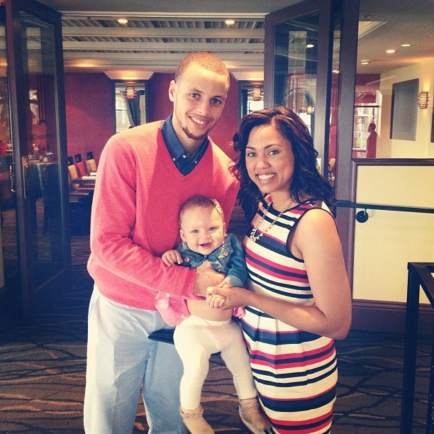

Stephen Curry
The man who is making history in the world of Basketball

About Stephen Curry:
Curry became a national star in March of his sophomore year, when he carried the Wildcats to a berth in the regional finals of the NCAA tournament with a series of high-scoring performances. After leading the nation with an average of 28.6 points per game as a junior, the All-American was selected with the seventh pick of the 2009 NBA Draft by the Golden State Warriors.
NBA Stardom
Despite his slight frame and boyish looks, Curry proved more than capable of handling the NBA opposition with his shooting and ball-handling abilities. The 6'3" guard averaged more than 22 points per game after the 2010 All-Star break, and wound up finishing second in the Rookie of the Year balloting. His impressive play earned him a spot on the USA Men's Basketball Senior National Team, which won the gold medal at the 2010 World Championships.
Curry went on to set a new record with 286 three-pointers and led the league in steals, an impressive all-around display that garnered him the Most Valuable Player Award.
For an encore, Curry helped the Warriors to 24 consecutive wins out of the starting gate in 2015-16, a torrid pace that propelled the team to an NBA-record 73 wins. The superstar guard again demonstrated his unparalleled skills throughout the season, finishing with an astounding 402 three-pointers and league-high 30.1 points per game. In May 2016, Curry became the first person to be named Most Valuable Player by unanimous vote in NBA history, and one of only 11 players to win the MVP award two years in a row.
Personal Life
Curry has two siblings: Brother Seth also went on to a career in professional basketball after starring at Duke University, and sister Sydel became a volleyball player at Elon University.
Curry married his college sweetheart, Ayesha, in July 2011. One year later they had their first child, a daughter named Riley.
Since his time as a student at Davidson, Curry has been involved with the United Nations Foundation's Nothing But Nets campaign, which distributes insecticide-treated mosquito nets across Africa to help combat malaria. The NBA star also raises resources for schools through the Stephen Curry Foundation and annually hosts a pair of charity golf events.
"Make it work no matter what you have to work with – that’s something that stuck with me very early on as a point guard. Adjust. Get creative. Try a different angle, a different lane, a different move or a different shot – just make it work."